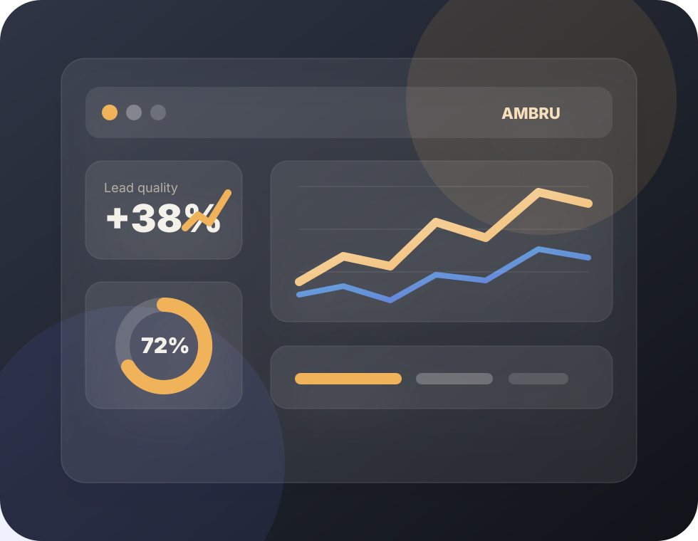
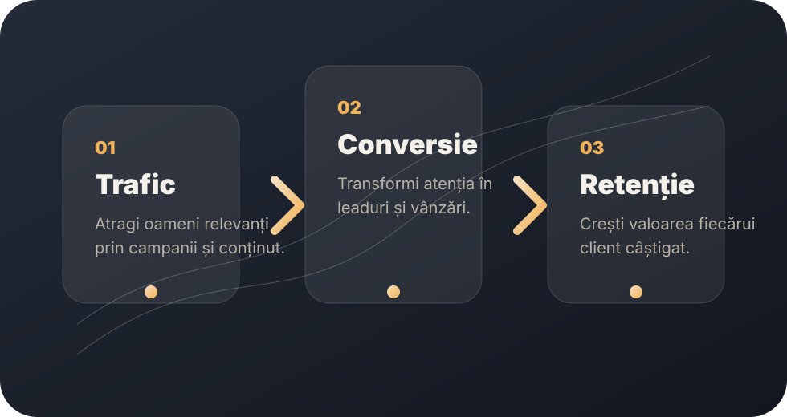
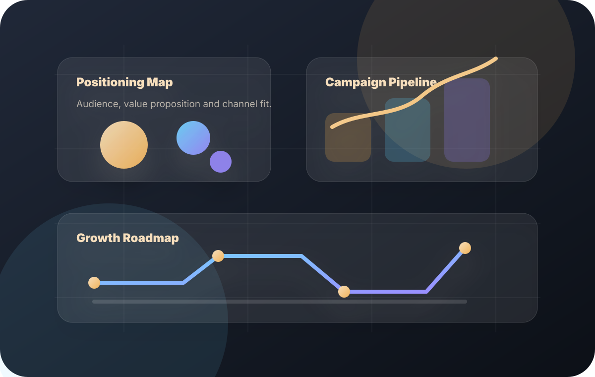
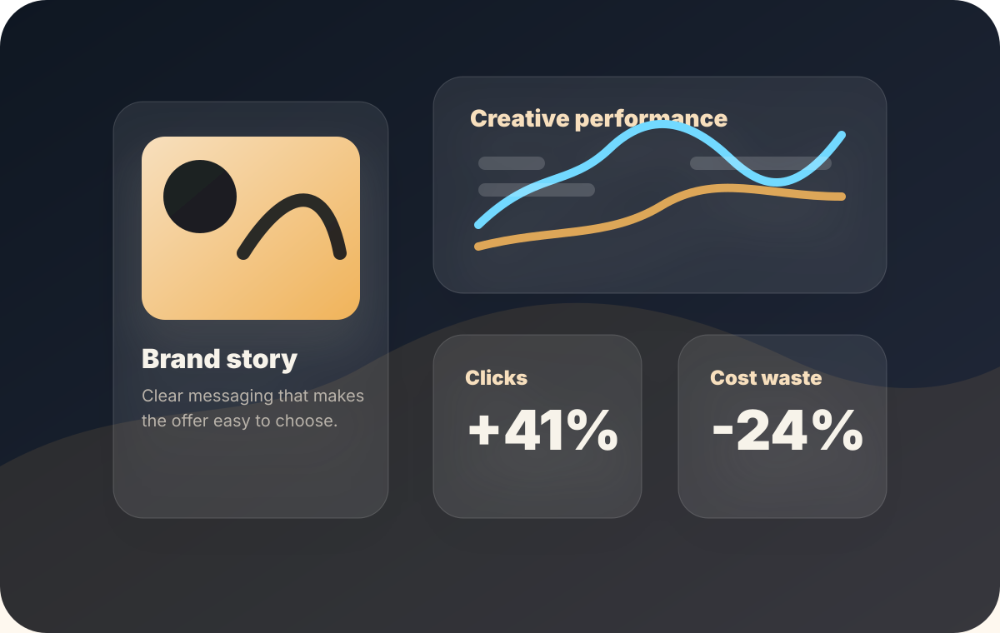

Marketing strategy
Audit, positioning, audience segments, offer architecture, campaign calendar and measurable objectives.
Performance marketing for ambitious brands
Ambru Marketing connects strategy, content, paid media and conversion optimization into one coherent growth system built for visible business results.

Services
Every service is connected to the same goal: attract the right audience, explain the offer clearly and turn attention into measurable results.
Audit, positioning, audience segments, offer architecture, campaign calendar and measurable objectives.
Meta, Google and LinkedIn campaigns designed for qualified traffic, leads, sales and fast learning.
Messaging, landing page copy, emails, posts and creative assets that build trust and explain value.
Structure, keyword research and content that brings relevant traffic over time.
Fast, clear pages designed for conversion, with tracking and campaign alignment.
Simple dashboards, useful conclusions and monthly improvement plans based on real data.
Growth system
Marketing works better when every channel has a defined role. We build a system where campaigns, content and pages support each other instead of operating separately.

Visual strategy
The site uses custom visual assets and data-style graphics to communicate strategy, creative direction and campaign performance in a clean, premium way.



Process
We analyze the audience, offer, channels, funnel and existing data.
We define messages, campaigns, budgets, KPIs and the execution calendar.
We launch campaigns, test hypotheses and improve the content system.
We read the data, remove waste and scale what is working.
Outcomes
Customers understand faster why your offer is the right choice.
Budgets are tested against clear hypotheses and optimized using data.
You can see where leads are lost and what should be improved next.
Contact
Contact details can be added once confirmed. The public project remains hosted on GitHub Pages, while the page links point to the final website address.